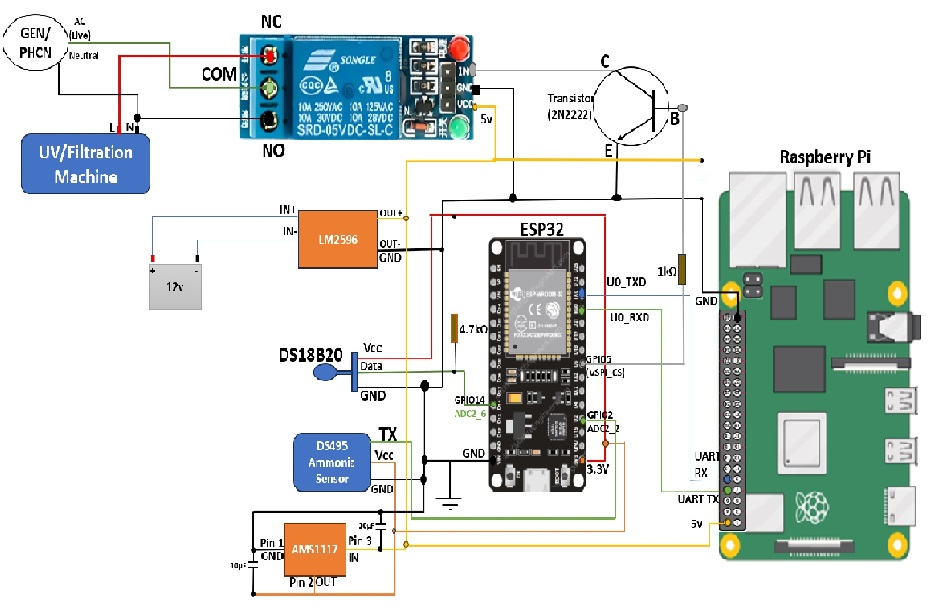
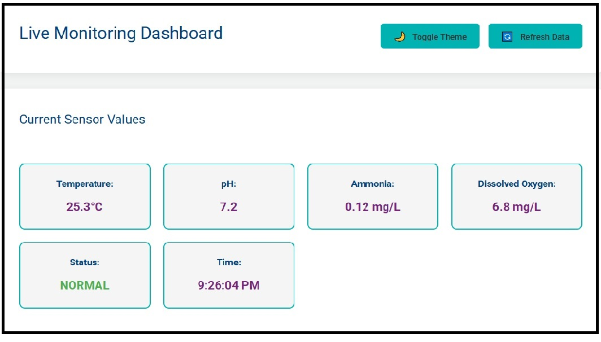
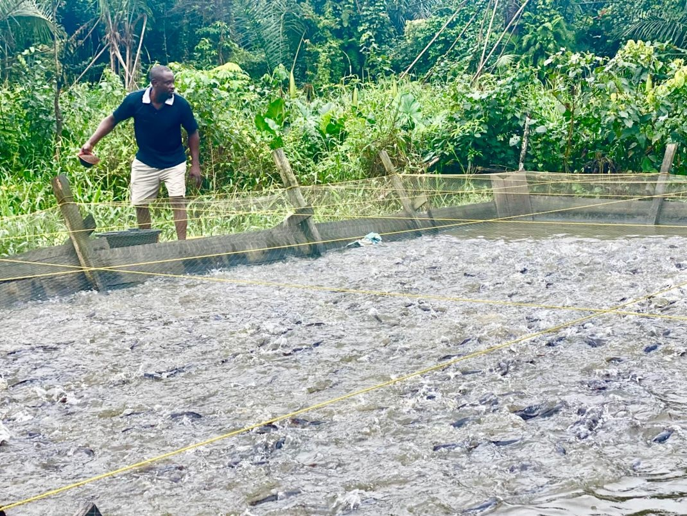

Water Quality Prediction
Machine learning models forecast water quality states (Safe, Moderate, Hazardous).
Harnessing Machine Learning and IoT for Sustainable Fish Farming
View Simulation DashboardMachine learning models forecast water quality states (Safe, Moderate, Hazardous).
Filtration and UV duty cycles adjusted dynamically to reduce energy consumption.
IoT sensors and dashboard provide continuous water quality tracking.
Prototype framework adaptable to commercial aquaculture and smart farming systems.

IoT Sensors for Temperature, pH, Ammonia, and DO

Web Interface Simulation Dashboard

Prototype Target Environment